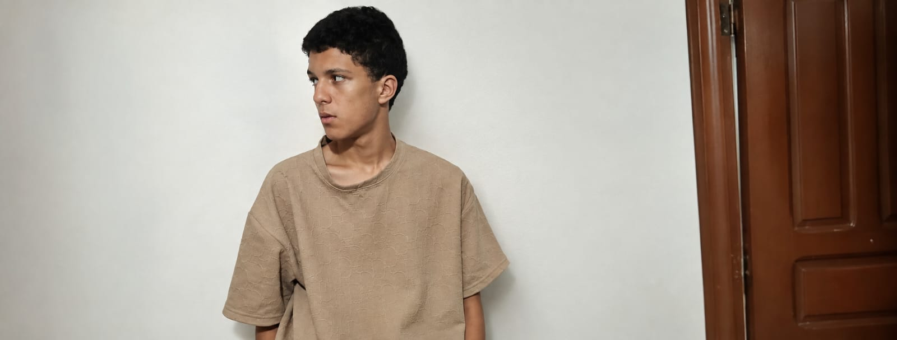
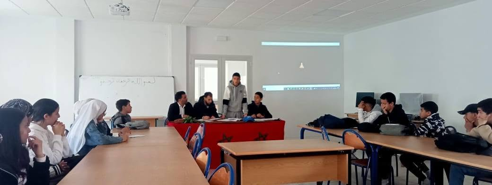
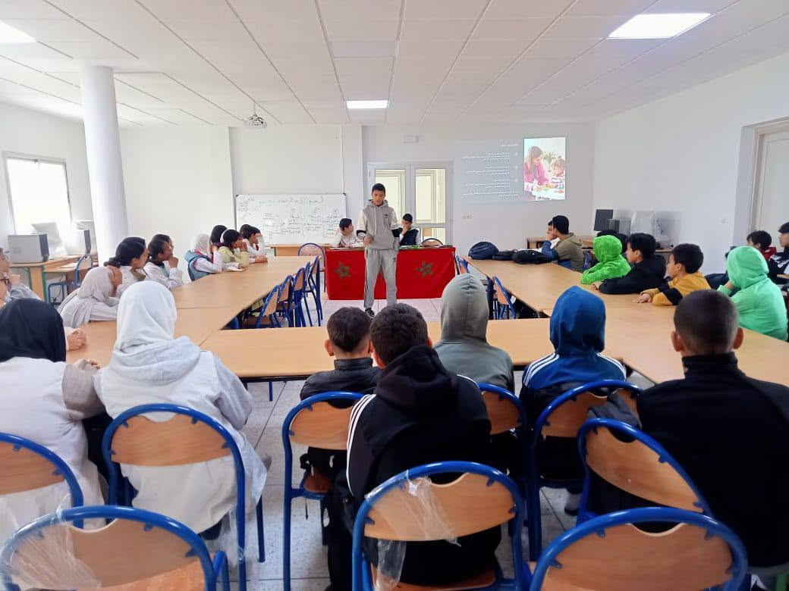

I am interested in programming
I did some software projects
public speaking
I present some presentations in my school
I am interested in robotics.
I created a robotic hand based on the instructions of my engineering science professor.

During middle school, I worked on a school presentation about climate change and water issues in my region. I researched the subject and presented what I learned to my classmates and teachers. This project made me look at environmental problems from a more local perspective. I realized that climate change is not only a global issue discussed in the news; it can directly affect people's lives, especially through water scarcity and changes in the environment. Presenting the project also helped me improve my communication skills and become more comfortable explaining information to other people. It made me more interested in finding practical solutions to environmental problems.
check it
During middle school, I also participated in a school presentation about autism. I researched the topic and presented information about autism and the importance of understanding and supporting people with autism. Before working on this project, I mainly saw autism as a medical or educational topic. However, researching it made me think more about inclusion and how society can create an environment where everyone can participate and feel accepted. The experience taught me that raising awareness can be a simple but meaningful way to contribute to a community. It also improved my ability to research a sensitive topic and communicate it respectfully to others.
check it